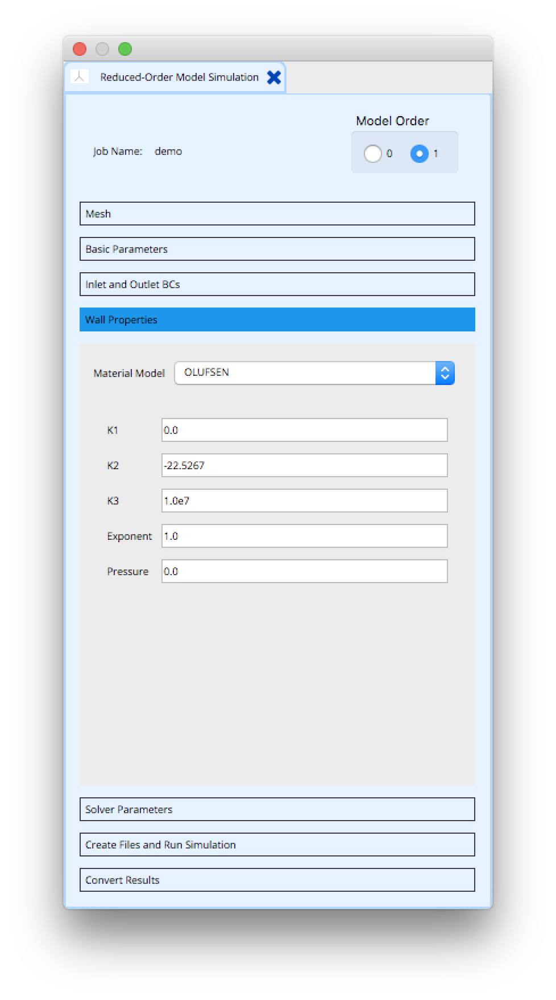
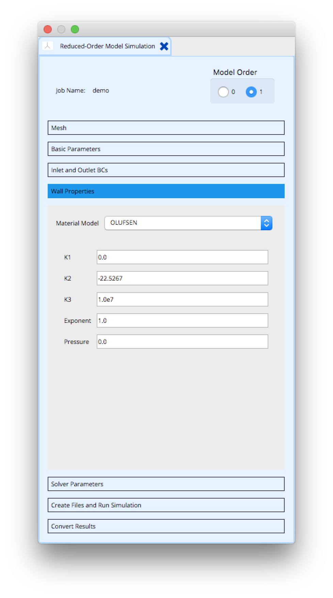

Introduction
The SimVascular ROM Simulation Tool is used to interactively create the geometry, boundary conditions and solver parameters needed to execute a reduced-order model (ROM) simulation of 3D vascular networks. The reduced-order models implemented in SimVascular use computationally inexpensive mathematical representations and reduced model dimensionality to approximate the flow and pressure quantities in a cardiovascular system.
The SimVascular sv1DSolver solves for blood pressure and flow in deformable one-dimensional hemodynamic networks. These equations offer a relatively efficient means to reproduce realistic wave propagation phenomemon in vascular networks. One-dimensional networks can be coupled to both 0D lumped parameter models and to more complex 3D flow simulations as boundary conditions.
The SimVascular svZeroDSolver solves for blood pressure and flow in a zero-dimensional spatial representation of a vascular network modeled as an electrical circuit. The resistive, elastic and inertial properties of blood flow through vessels are lumped into electrical elements. Although no spatial distribution of flow quantities is provided this ROM can be complex enough to provide a good approximatation of circulatory dynamics.
Centerlines Geometry
The geometry of the one-dimensional networks used by the sv1DSolver is based on the centerlines computed from the surface of a 3D geometric model. The 3D geometric model is created from image data using the typical SimVascular modeling workflow .
Centerlines represent a 1D characterization of blood vessel geometry. The centerlines are computed for a 3D surface using the Vascular Modeling Toolkit . The computation solves a wave propagation problem using a source point representing the start of the centerlines and target points representing the ends of the centerlines. The source and target points are selected from the model caps defined in the SimVascular Modeling Tool.


Network Geometry and 1D Simulation Mesh
The centerlines geometry is used to define network nodes at vessel inlets, outlets and branching points. A number of cylindrical segments are defined representing the length and diameter between vessel nodes.

Segments are then discretized into a mesh of finite elements in order to numerically solve the 1D equations of fluid flow in deformable vessels.

Network Connectivity and 0D Simulation Circuit
The centerlines geometry is also used to define the connectivty for a 0D electrical circuit.
Units
All model quantities and associated boundary conditions are specified in CGS units.
ROM Simulation Tool
The SimVascular ROM Simulation Tool is used to interactively create an input file defining the geometry, boundary conditions, material properties and solver parameters needed to execute a reduced-order model (ROM) solver simulation. A ROM Simulation Tool instance is created by right-clicking on the ROMSimulations node under the SV Data Manager. Selecting the Create ROM Simulation job menu item displays a popup window.

Use the Select Model list to select the 3D geometric surface model used to create centerlines. The list contains the names of all models created by any SimVascular Modeling Tool instance. Type in a job name used to identify the Simulations1d Tool instance and to name the files and directories stored under the SimVascular project’s Simulations1d directory. Selecting OK creates an ROM Simulation Tool instance node under the SV Data Manager. Selecting this instance displays the ROM Simulation Tool panel.

The panel contains seven sub-panels used to create or input a specific category of data needed to execute a reduced-order model solver simulation.
- Mesh
- Basic Parameters
- Inlet and Outlet BCs
- Wall Properties
- Solver Parameters
- Create Files and Run Simulation
- Convert Results
A selecting a sub-panel name brings up the sub-panel’s widgets. The following sections describe how each of the sub-panels are used.
Mesh Panel
The Mesh panel is primarily used to create centerlines from the surface of a 3D geometric model. A source for the centerline computation must first be selected from the inlet/outlet faces (model caps) defined by the Modeling Tool. The number of elements used to discretize a segment may be controled by setting the element size.
Panel Layout
Usage
Model - The name of the model used to create centerlines. The model is selected when creating the simulation job. This text box is for display only, a model name cannot be entered.
Select Inlet Face - Select the source for the centerline computation. Clicking on this button causes a multi-element check box to appear with entries for each model inlet/outlet face. A (single) face is selected, typically vessel inlet.

Inlet Face - The model face name used as a source for the centerline computation. This text box is for display only, a face name cannot be entered.
Calculate Centerlines - Start the centerline computation.
Element size - Set the size of elements used to discretize a segment.
Basic Parameters Panel
The Basic Parameters panel is used to set the fluid physical parameters.
Panel Layout
The panel GUI contains a single table.

Usage
Values may be entered in the table by double clicking in the Value column.
Fluid Density - The value of the fluid density used for simulations.
Fluid Viscosity - The value of the fluid Viscosity used for simulations.
Inlet and Outlet BCs Panel
The Inlet and Outlet BCs panel is used to set the boundary condition type and parameter values for each inlet and outlet face defined for the model. The following types of boundary conditions are supported
- Prescribed velocites
- Resistance
- RCR
Panel Layout
The panel GUI contains a single table listing the inlet and outlet faces defined for the model. The panel shown below has three inlet and outlet faces defined.
Usage
The boundary condition type and associated parameter values are changed by double clicking on a face name in the Name column. This displays a Set Inlet/Outlet BCs popup window. The parameters displayed in the window depend on the boundary condition type


Prescribed velocites
The Prescribed velocites boundary condition defines a flow waveform for an inlet face. The inlet flow rates are provided by a text file with time and flow value colums.
Usage
Analytic Shape - Defines the shape of the velocity profile: parabolid, plug or wormersley.
Point Number - Defines ?
Fourier Modes - Defines ?
Flow rate (from file) - Selecting the … brings a file browser used to selected a flow file.
Period -
Flip normal -
Resistance
The Resistance boundary condition defines the downstream resistance for an outlet face.
Usage
Resistance - The resistance parameter that characterizes the downstream vasculature.
Distal Pressure - Defines ?
RCR
The RCR boundary condition defines the downstream resistance for an outlet face.
Usage
Rp C Rd - The resistance parameter that characterizes the downstream vasculature.
Distal Pressure - Defines ?
Wall Properites Panel
The Wall Properites panel is used to set the material properties for vessel walls. The following material models are supported
- Linear
- Olufsen
Panel Layout
The panel GUI contains parameters that vary with the material model selected by the Material Model combination box.
 

Usage
The boundary condition type and associated parameter values are changed by double clicking on a face name in the Name column.
This displays a Set Inlet/Outlet BCs popup window. The parameters displayed in the window depend on the boundary condition
type
Linear
The Linear material model.
Usage
Eh/r - The product of elastic modulus and thickness divided by the radius.
Pressure - The material reference pressure.
Olufsen
The Olufsen material model.
Usage
K1, K2, K3 - The empirically-derived constants used to best fit the equation $Eh/r_0(z) = k_1 \exp(k_2 r_0(z)) + k_3 $.
Exponent - The material exponent.
Pressure - The material reference pressure.
Solver Parameters Panel
The Solver Parameters panel is used to set the parameters needed to execute the 1D Solver.
Simulation results are computed for times Time Step Size*i, i = 0,1,2,…,Number of Time Steps but are
only written with the frequency given by Number of Timesteps between Saving Data.
Panel Layout
The panel GUI contains a single table listing Time Step and Output Control solver parameters.

Usage
Values may be entered in the table by double clicking in the Value column.
Number of Time Steps - The number of time steps to use for the 1D simulation.
Time Step Size - The size of the time step to use for the 1D simulation. Time step size affects numerical error and stability.
Number of Timesteps between Saving Data - The number of time steps to skip when saving 1D simulation results.
Create Files and Run Simulation Panel
The Create Files and Run Simulation panel is used to create a 1D solver input file and run the 1D solver.
Panel Layout

Usage
Create Files for Simulation - Create a 1D solver input file.
Run Simulation - Run the 1D solver.
Convert Results
The Convert Results panel is used to convert 1D simulation results to a CSV file format.
The simulation results directory must contain a 1D solver input file named solver.in and results (.dat) files. Simulation results are stored in the project’s Simulations1d/JOBNAME directory.
Results can be selectively converted for segements at vessel outlets.
A time range start/stop values can be given to only convert results within that range. The data conversion times are determined by the parameter values specified in the Solver Parameters panel.
The 1D solver writes results for cross-section area, flow, pressure, Reynolds number (Re), and wall shear stress (wss). Results can be selectively converted for one or more of these data.
Panel Layout
Usage
Results Directory - Set the directory containing the 1D simulation results to convert. The directory path can be entered in the text box. Selecting … brings up a file browser.
Convert Directory - Set the directory where converted results are written. The directory path can be entered in the text box. Selecting … brings up a file browser.
Start - Set the start time for the time range usded to convert simulation data. The time is a real simulation time value.
Stop - Set the stop time for the time range usded to convert simulation data. The time is a real simulation time value.
Segements - Set the segment type used to convert data. Select Outlet to convert data only for segments that have an outlet boundary condition. Select All for converting data for all segments.
Data - Set the names of data to convert.
Convert - Convert the 1D simulation results.
Tutorial
This section demonstrates how to use the 1D Simulation Tool to interactively create the geometry, boundary conditions and solver parameters needed to execute a sv1DSolver simulation. The geometry of the one-dimensional networks used for a 1D simulation is based on the model of the aorta and branching left and right iliac vessels created in the Demo Project discussed in the SimVascular QuickGuide documentation.
A flow rate inlet boundary condition is used for the aorta inlet. RCR boundary conditions are used for left and left and right iliac vessels.
An Olufsen material model is used for the vessel wall properties.
Open the Demo Project
Opening the Demo Project displays the image slices and model geometry. Change the display layout to big 3D and hide the image to get a better view of the model.


Create an instance of the 1D Simulation Tool
Create an instance of the 1D Simulation Tool by right clicking on the SV Data Manager Simulations1d node and selecting Create 1D Simulation job from the popup menu.

A box is then displayed that is used to select a model name and to enter the name of the 1D simulation job to create. The Select Model is set to the default model name demo, the only model defined. Enter demo in the Job Name text box to create a 1D simulation job named demo. Click OK.

A node named demo is created under SV Data Manager Simulations1d. Left clicking on this node brings up the 1D Simulation Tool GUI panel on the right side of the SimVascular window. The model name is displayed in the Model text box. The model surface representation is changed to wireframe to better show centerlines geometry when it is created.

Create centerlines geometry
Select a model inlet face for the start of the centerlines by clicking on the Select Inlet Face button. This brings up a check box listing all of the caps (inlet/outlet faces) defined for the demo model. Select the cap_aorta entry box under the Use column of the check box.

The inlet face selected is displyed in the Inlet Face text box. Click on the Calculate Centerlines button to start the centerlines computation for the demo surface 3D geometric model. When the computation finishes the centerlines geometry is displyed using green lines.

Set inlet and outlet boundary conditions
Select the Inlet and Outlet BCs sub-panel name to bring up the Inlet and Outlet BCs panel used to set the boundary condition type and parameter values for each inlet and outlet face defined for the model.

The panel contains a table listing the inlet (cap_aorta) and two outlet (cap_right_iliac and cap_aorta_2) faces defined for the model.
Set cap_aorta inlet flow boundary condition
Double click with the left mouse button on cap_aorta under the Name column. This brings up a Set Inlet/Outlet BCs popup window. To set an inlet flow boundary condition2) Left click on the Flow rate (from file) … button to bring up a file browser
3) Select the inflow.flow file from the project’s flow-files directory
4) Select OK

Set cap_right_iliac RCR boundary condition
Double click with the left mouse button on caprightiliac under the Name column. This brings up a Set Inlet/Outlet BCs popup window. To set an RCR boundary condition2) Enter 90 0.0008 1200 into the $R_p C R_d$ text box
3) Select OK

Set cap_aorta_2 RCR boundary condition
Double click with the left mouse button on cap_aorta_2 under the Name column. This brings up a Set Inlet/Outlet BCs popup window. To set the values for the RCR boundary condition2) Enter 100 0.0004 1100 into the $R_p C R_d$ text box
3) Select OK

The boundary condition and parameter values for each inlet and outlet faces are now defined and are shown in the Inlet and Outlet BCs panel table. Boundary conditions may also be directly entered into the table by double clicking with the left mouse button on the BC Type and Values columns.

Set wall properties
Select the Wall Properties sub-panel name to bring up the Wall Properties panel used to set the material properties for vessel walls.

To set the material model to Olufsen
2) Enter 2.0e7 into the $K_1 $ text box
3) Enter 8.65e5 into the $K_3 $ text box
4) Enter 113324.0 into the Pressure text box

Set solver parameters
Select the Solver Parameters sub-panel name to bring up the Solver Parameters panel used to set the parameters needed to execute the 1D Solver.

To set the solver parameters
2) Double click with the left mouse button on the Time Steps Size Values column and enter 0.001.
3) Double click with the left mouse button on the Number of Timesteps between Saving Data Values column and enter 1.

Create the 1D Solver input file and run a simulation
Select the Create Files and Run Simulation sub-panel name to bring up the Create Files and Run Simulation panel used to used to create a 1D solver input file and run the 1D solver.

To generate the 1D Solver input file click on the Create Files for Simulation button. A popup window is displayed showing the number of segments, nodes and finite elements created for the 1D simulation.

Click OK.
To run a 1D Solver simulation on the Run Simulation button. A popup window is displayed when the simulation finishes.

Selecting the Show Details button dispays the 1D Solver log file
--------------------------------- oneDSolver 1D Finite Element Hemodynamics --------------------------------- Reading file: /SVProject/Simulations1d/demo/solver.in ... Printing Model Echo ... Creating and Running Model ... Creating Nodes ... Creating Joints ... Creating Materials ... call cvOneMaterialsOlufsen p1_=113324.014500 K3_=0.000000 Setting material K's 0 -22.5267 1e+07 ... Setting reference Pressure 0 call SetMaterialType K3_ 10000000.000000 new cvOneMaterialOlufsen called check pRef 0.000000 Creating Data Tables ... Creating Segments ... Solving Model ... Inlet Condition Type: FLOW ~~~~~~~~~~~~~~~~~~~~~~~~~~~~~~~~~ Number of Joints: 1 Number of Segments: 3 ~~~~~~~~~~~~~~~~~~~~~~~~~~~~~~~~~ call cvOneMaterialsOlufsen p1_=113324.014500 K3_=33.690970 In GetNewInstance cvOneDMaterialOlufsen is called matID=0 call cvOneDMaterialOlufsen that this K3_=10000000.000000 p1_=0.000000 In GetNewInstance cvOneDMaterialOlufsen* materials is called subdomain cpp setupMaterial matID=0 call cvOneMaterialsOlufsen p1_=113324.014500 K3_=0.000000 In GetNewInstance cvOneDMaterialOlufsen is called matID=0 call cvOneDMaterialOlufsen that this K3_=10000000.000000 p1_=0.000000 In GetNewInstance cvOneDMaterialOlufsen* materials is called subdomain cpp setupMaterial matID=0 RCR boundary condition call cvOneMaterialsOlufsen p1_=113324.014500 K3_=0.000000 In GetNewInstance cvOneDMaterialOlufsen is called matID=0 call cvOneDMaterialOlufsen that this K3_=10000000.000000 p1_=0.000000 In GetNewInstance cvOneDMaterialOlufsen* materials is called subdomain cpp setupMaterial matID=0 RCR boundary condition Subdomain No. 3 Joint No. 1 Outlet No. 2 Number of equations 1303 Using Conservative Form ... maxStep/stepSize: 10000 Total Solution is: 10000 x 1303 **** Time cycle 1 iter: 0 normf: 134.606 norms: 0.00421471 time: 0.001614 iter: 1 normf: 43.8713 norms: 0.0246538 time: 0.001102 iter: 2 normf: 1.14964 norms: 1.17156e-05 time: 0.001108 iter: 3 normf: 0.0299168 norms: 5.84007e-08 time: 0.001096 iter: 4 normf: 0.000699028 norms: 1.16806e-09 time: 0.001097 iter: 5 normf: 2.68722e-05 norms: 3.94369e-11 time: 0.001097 Time = 0.001, Mass = 0.0169997, Tot iters = 6 iter: 0 normf: 81.4714 norms: 0.0257353 time: 0.001099 iter: 1 normf: 7.04379 norms: 4.91323e-05 time: 0.001204 iter: 2 normf: 0.288877 norms: 3.82307e-07 time: 0.001262 iter: 3 normf: 0.0109262 norms: 2.31787e-08 time: 0.001136 ... Time = 9.998, Mass = 0.0889071, Tot iters = 4 iter: 0 normf: 0.732147 norms: 0.000141274 time: 0.001097 iter: 1 normf: 0.394251 norms: 0.000232438 time: 0.001099 iter: 2 normf: 0.0100552 norms: 5.84729e-09 time: 0.001096 iter: 3 normf: 0.000314998 norms: 4.17093e-11 time: 0.001097 Time = 9.999, Mass = 0.0899291, Tot iters = 4 iter: 0 normf: 0.734032 norms: 0.000143682 time: 0.001099 iter: 1 normf: 0.384852 norms: 0.000227006 time: 0.001096 iter: 2 normf: 0.00978278 norms: 5.759e-09 time: 0.001096 iter: 3 normf: 0.000306487 norms: 4.06793e-11 time: 0.001098 Time = 10, Mass = 0.0908278, Tot iters = 4 demoGroup0_Seg0_flow.dat demoGroup0_Seg0_area.dat demoGroup0_Seg0_pressure.dat demoGroup0_Seg0_Re.dat demoGroup0_Seg0_wss.dat demoGroup2_Seg1_flow.dat demoGroup2_Seg1_area.dat demoGroup2_Seg1_pressure.dat demoGroup2_Seg1_Re.dat demoGroup2_Seg1_wss.dat demoGroup3_Seg2_flow.dat demoGroup3_Seg2_area.dat demoGroup3_Seg2_pressure.dat demoGroup3_Seg2_Re.dat demoGroup3_Seg2_wss.dat Completed!
Convert and simulation results
Select the Convert Results sub-panel name to bring up the Convert Results panel used to used to convert 1D solver simulation results to CSV format files.

Set the Results Directory by selecting … to bring up a file browser. Navigate to the /PROJECT/Simulations1d/demo/ directory and press Open. Set the time range Start value 0.0 and the Stop value to 0.8. From the Data scrolling text box select flow and pressure data. Select the Convert button to convert the results.

The CSV files for flow and pressure results are stored in the /PROJECT/Simulations1d/demo/demo-converted-results directory. The CSV files can be graphed using several applications (gnuplot, MATLAB, ParaView, etc.). Here we have plotted flow results using ParaView.

References
[1] T.J.R. Hughes and J. Lubliner, On the One-Dimensional Theory of Blood Flow in the Larger Vessels , Mathematical Biosciences, 18(1-2) (1973), 161-170.
[2] T.J.R. Hughes, A Study of the One-Dimensional Theory of Arterial Pulse Propagation, 1974, U.C. Berkeley, Ph.D. Thesis.
1D Solver
The one-dimensional equations for the flow of a Newtonian, incompressible fluid in a deforming, elastic domain consist of the continuity equation, a single axial momentum balance equation, a constitutive equation, and suitable initial and boundary conditions. The governing equations are derived in a general form by Hughes[2] and Hughes and Lubliner[1].
A coupled multi-domain method for 1D hemodynamics
Flow and pressure waves, originating due to the contraction of the heart, propagate along the deformable vessels and reflect due to tapering, branching, and other discontinuities. The size and complexity of the cardiovascular system necessitate a multidomain approach, with “upstream” regions of interest (large arteries) coupled to reduced-order models of “downstream” vessels. Previous efforts to couple upstream and downstream domains have included specifying resistance and impedance outflow boundary conditions for the nonlinear one-dimensional wave propagation equations and iterative coupling between three-dimensional and one-dimensional numerical methods. We have developed a new approach to solve the one-dimensional nonlinear equations of blood flow in elastic vessels utilizing a space-time finite element method with GLSstabilization for the upstream domain, and a boundary term to couple to the downstream domain.
The outflow boundary conditions are derived following an approach analogous to the Dirichlet-to-Neumann (DtN) method.
In the downstream domain, we solve simplified 0D/1D equations to derive relationships between pressure and flow accommodating periodic and transient phenomena with a consistent formulation for different boundary condition types. In this chapter, we also present a new boundary condition that accommodates transient phenomena based on a Green’s function solution of the linear, damped wave equation in the downstream domain.
The mathematical formulation, the numerical derivation and results are presented in the next sections.
We present here the different steps that are required to develop the coupled multidomain method from the strong form in the original domain to the variational form in the computational domain that includes the information of the analytical domain.
Strong form
The one-dimensional equations for the flow of a Newtonian, incompressible fluid in a deforming, elastic domain consist of the continuity equation, a single axial momentum balance equation, a constitutive equation, and suitable initial and boundary conditions. The governing equations are derived in a general form by Hughes [2] and Hughes and Lubliner [1]. The partial differential equations for mass and momentum balance are given by (z is the axial coordinate):
$$\frac{\partial S}{\partial t} + \frac{\partial Q}{\partial z} = -\psi$$
$$\frac{\partial Q}{\partial t} + \frac{\partial}{\partial z}\left[(1 + \delta)\,\frac{Q^2}{S}\right] + \frac{S}{\rho}\,\frac{\partial p}{\partial z} = S\,f + N\,\frac{Q}{S} + \nu\frac{\partial^2 Q}{\partial z^2}$$
The primary variables are the cross-sectional area $S$, the pressure $p$, and the volumetric flow rate $Q$. The density of the fluid is given by ρ (assumed constant), the external force by $f$, the kinematic viscosity by $\nu$ (assumed constant) and $\psi$ is an outflow function (taken to be zero for impermeable vessels). The variables $\delta$ and $N$ are defined by the choice of a profile function for the velocity over the cross-section. Here we choose a time-varying, parabolic flow profile, thus Hughes and Lubliner [1]:
$$\delta = \frac{1}{3},\quad N = -8\,\pi\,\nu \label{1} \tag{1} $$
The governing equations are of mixed parabolic-hyperbolic type, but have mainly a hyperbolic nature since the diffusive term is small. We thus impose one boundary condition at each inlet/outlet by specifying values of the primary variables or a relationship between them.
The flow rate is typically specified at the inlet(s) ($\Gamma_in$), but the inlet boundaries can accommodate the same types of boundary conditions as will be subsequently discussed for the outlets:
$$ Q(z,t) = Q_in(t),\quad z\in\Gamma_in $$
The initial conditions for this problem are given by (where $S^0(z)$, $Q^0(z)$ and $p^0(z)$ are prescribed functions):
$$ S(z,0) = S^0(z),Q(z,0) = Q^0(z)\,\text{and}\, p(z,0) = p^0(z) $$
In order to complete the above system, we need to introduce a constitutive relationship. An elastic model is assumed, which relates the pressure to the cross-sectional area as follows:
$$p(z,t) = \tilde{p}[S(z,t),z,t]$$
and its inverse function
$$ S(z,t) = \tilde{S}[p(z,t),z,t] \label{2} \tag{2} $$
The particular constitutive relationship that we have used is that proposed by Olufsen [3]:
$$ \tilde{p}(S,z) = p^0(z) + \frac{4}{3}\,\frac{E\,h}{r^0(z)}\,\left(1 - \sqrt{\frac{S^0(z)}{S(z,t)}}\right) \label{3} \tag{3} $$
here the Young’s modulus $E$ and the wall thickness $h$ relate to the radius $r^0 = \sqrt{S^0(z)/\pi}$:
$$ \frac{E\,h}{r^0(z)} = k_1\,\exp{k_2\,r^0(z)} + k_3 $$
In this relationship, $k_1$, $k_2$, and $k_3$ are empirically-derived constants with values in CGS units of $2x10^{7} g⋅ s^{-2}⋅ cm^{-1}$, $-22.53 cm^{-1}$, and $8.65 x 10^{5} g⋅ s^{-2}⋅ cm^{-1}$, respectively. Here we use a constant initial pressure $p^0(z) = p^0$. By noting that the pressure gradient can be expanded as
$$ \frac{\partial p}{\partial z} = \frac{\partial\tilde{p}}{\partial S}\,\frac{\partial S}{\partial z} + \frac{\partial\tilde{p}}{\partial z} $$
we can rewrite the system of partial differential equations in the following quasi-linear conservative form:
$$ \frac{\partial\mathbf{U}}{\partial t} + \frac{\partial\mathbf{F}}{\partial z} - \mathbf{K}\,\frac{\partial^2\mathbf{U}}{\partial z^2} = G,\,\text{or}\quad\frac{\partial\mathbf{U}}{\partial t} + \frac{\partial\mathbf{F}}{\partial z} - \mathbf{K}\,\frac{\partial^2\mathbf{U}}{\partial z^2} = \mathbf{C}_F\,\mathbf{U} $$
where
$$ \mathbf{U} = \begin{bmatrix}U_1\ \cr U_2 \end{bmatrix} = \begin{bmatrix} S \cr Q \end{bmatrix} \label{4} \tag{4} $$
$$ \mathbf{F} = \begin{bmatrix} U_2 \cr (1 + \delta)\,\frac{U_2^2}{U_1} + \frac{1}{\rho}\,\int_{p^0}^{p(z,t)}\tilde{S}(p,z,t)\,dp \end{bmatrix}, \quad \mathbf{K} = \begin{bmatrix} 0 & 0 \cr 0 & \nu\ \end{bmatrix} $$
$$ \mathbf{G} = \begin{bmatrix} -\psi \cr U_1\,f + N\,\frac{U_2}{U_1} + \int_{p^0}^{p}\frac{1}{\rho}\,\frac{\partial\tilde{S}(p,z,t)}{\partial z}\,dp \end{bmatrix},\quad $$
$$ \mathbf{C}_F = \begin{bmatrix} -\frac{\psi}{U_1} & 0 \cr f + \frac{1}{U_1}\,\int_{p^0}^{p}\frac{1}{\rho}\,\frac{\partial\tilde{S}(p,z,t)}{\partial z}\,dp & \frac{N}{U_1} \end{bmatrix} $$
The motivation to work with the conservative form rather than the advective form as in previous work [4], is to be able to integrate by part the convective term and obtain a flux (a boundary integral) through which the multidomain coupling can be performed.
Note that in the advective form, the only term that can easily be integrated by parts is the longitudinal viscous term, which is very small and often neglected in one-dimensional theory. Thus, the main difference between the two forms is the treatment of the boundary conditions.
In the present conservative formulation, boundary conditions are prescribed in a natural way. In contrast, in the advective form, boundary conditions are enforced in an essential way: the equation for the corresponding dof is replaced by an equation representing the boundary condition.
Weak form
The weak formulation of the initial boundary value problem is given as follows with $\Omega = [0, L]$ : find $\mathbf{U}$ in $\mathcal{V} = {\mathbf{U}:\Omega\times (0,T)\rightarrow\mathbb{R}^2\,|\,\mathbf{U}(z,t)\in H_0^1}$ such that $\forall\,\mathbf{W} = \left[W_1\,W_2\right]^T\in\mathcal{V}$,
$$ \begin{eqnarray} & \int_{0}^{t}\int_{0}^{L}\left(-\mathbf{W}_{,t}^T\,\mathbf{U} - \mathbf{W}_{,z}^T\,\mathbf{F} + \mathbf{W}_{,z}^T\,\mathbf{K}\,\mathbf{U}_{,z}-\mathbf{W}^T\,\mathbf{G}\right)\,dz\,dt + \int_{0}^{T} \left[\mathbf{W}^T\left(\mathbf{F}-\mathbf{K}\mathbf{U}_{,z}\right)\right]\_{0}^{L}\,dt + \cr & \int_{0}^{L}\mathbf{W}^T(z,T)\mathbf{U}(z,T)\,dz - \cr & \int_{0}^{L}\mathbf{W}^T(z,0)\,\mathbf{U}^0(z)\,dz = 0 \end{eqnarray} $$
where the initial condition is given by $\mathbf{U}^0(z) = \left[S^0(z),Q^0(z)\right]^T$. The boundary conditions are not specified at this point.
Disjoint Decomposition
We adopt the disjoint decomposition approach described in 2.3 to derive appropriate outflow boundary conditions. First, we divide our spatial domain $\Omega=[0,L]$ into an upstream numerical domain $\Omega^{n}: z\in(0,B)$, and a downstream analytic domain $\Omega^{a}: z\in(B,L)$.
The boundary that separates these domains is defined as $\Gamma_{B} : z = B$. We define a disjoint decomposition of our variables, for example for our unknown solution vector $\mathbf{U}$
$$\mathbf{U} = \mathbf{U}^{n} + \mathbf{U}^{a}$$
so that
$$\mathbf{U} = \begin{cases} \mathbf{U}^{n} & z\in\Omega^{n} \cr \mathbf{U}^{a} & z\in\Omega^{a} \end{cases}$$
We use a similar decomposition for our weighting function, $\mathbf{W}$ , and insert these expressions into our variational form.
The disjoint nature of this expression is used to derive a new variational form for the 1D numerical domain: we obtain the original variational form specialized to the 1D numerical domain $\Omega^{n}$ with the addition of a boundary term accounting for the interface to the 1D analytic domain, $\Omega^{a}$
$$\begin{eqnarray} & \int_{0}^{t}\int_{0}^{B}\left(-\mathbf{W}_{,t}^{n\,T}\,\mathbf{U}^{n} - \mathbf{W}_{,z}^{n\,T}\,\mathbf{F}(\mathbf{U}^{n}) + \mathbf{W}_{,z}^{n\,T}\,\mathbf{K}\,\mathbf{U}^{n}_{,z}-\mathbf{W}^{n\,T}\,\mathbf{G}(\mathbf{U}^{n})\right)\,dz\,dt \cr & -\int_{0}^{B}\,\mathbf{W}^{n\,T}(z,T)\,\mathbf{U}^{n}(z,T)\,dz + \int_{0}^{B}\mathbf{W}^{n\,T}(z,0)\,\mathbf{U}^{n}(z,0)\,dz + \cr & \int_{0}^{T}\left[\mathbf{W}^{n\,T}\left(\mathbf{F}(\mathbf{U}^{n}) - \mathbf{K}\,\mathbf{U}^{n}_{,z}\right)\right]_{z=0}\,dt - \int_{0}^{T}\left[\mathbf{W}^{a\,T}\left(\mathbf{F}(\mathbf{U}^{a}) - \mathbf{K}\,\mathbf{U}^{a}_{,z}\right)\right]_{z=B}\,dt = 0 \end{eqnarray} \label{5} \tag{5} $$
Now, we enforce the continuity of the weighting function at the interface:
$$ \mathbf{W}^{a}\vert_{z=B} = \mathbf{W}^{n}\vert_{z=B} $$
and define the operators $\mathbf{M}$ and $\mathbf{H}$ on the $\Omega^{a}$ domain based on the model of the downstream domain:
$$\left[\mathbf{M}(\mathbf{U}^{a})\right]_{z=B} = \left[\mathbf{F}(\mathbf{U}^{a}) - \mathbf{K}\mathbf{U}^{a}_{,z}\right]_{z=B} $$
$\mathbf{M}$ acts on the solution variables and $\mathbf{H}$ depends only on other terms like initial conditions, boundary conditions, and physical properties in the downstream domain.
Finally, we enforce the continuity of the flux at the boundary:
$$ \left[\mathbf{M}(\mathbf{U}^{n})\right]_{z=B} = \left[\mathbf{M}(\mathbf{U}^{a})\right]_{z=B} \label{6} \tag{6} $$
The final result is
$$ \begin{eqnarray} & \int_{0}^{t}\int_{0}^{B}\left(-\mathbf{W}_{,t}^{n\,T}\,\mathbf{U}^{n} - \mathbf{W}_{,z}^{n\,T}\,\mathbf{F}(\mathbf{U}^{n}) + \mathbf{W}_{,z}^{n\,T}\,\mathbf{K}\,\mathbf{U}^{n}_{,z}-\mathbf{W}^{n\,T}\,\mathbf{G}(\mathbf{U}^{n})\right)\,dz\,dt \cr & -\int_{0}^{B}\,\mathbf{W}^{n\,T}(z,T)\,\mathbf{U}^{n}(z,T)\,dz + \int_{0}^{B}\mathbf{W}^{n\,T}(z,0)\,\mathbf{U}^{n}(z,0)\,dz + \cr & \int_{0}^{T}\left[\mathbf{W}^{n\,T}\left(\mathbf{F}(\mathbf{U}^{n}) - \mathbf{K}\,\mathbf{U}^{n}_{,z}\right)\right]_{z=0}\,dt - \int_{0}^{T}\left[\mathbf{W}^{n\,T}\left(\mathbf{M}(\mathbf{U}^{n}) + \mathbf{H}\right)\right]_{z=B}\,dt = 0 \end{eqnarray} $$
We see that the solution in the numerical domain depends on the operators $\mathbf{M}$ and $\mathbf{H}$ defined by the mathematical model of the downstream domain but not the solution variable, $\mathbf{U}^{a}$, in the downstream domain.
The Map from the “DtN” Method
The operators $\mathbf{M}$ and $\mathbf{H}$ are based on the mathematical model of the downstream domain using an approach based on the “Dirichlet-to-Neumann” method [5-7,9]. The physics of the downstream domain depends on the upstream domain. Thus, an explicit solution on the downstream domain cannot be obtained. Instead, a relationship between the unknowns that incorporates all the information of the model, the map, is derived. The DtN map is then inserted into the flux term previously described $eq20$, to derive the operators $\mathbf{M}$ and $\mathbf{H}$. In practice, the contribution of the diffusive flux term $\mathbf{K}\mathbf{U}_{,z}$ is observed to be negligible in the boundary integral and is hence omitted in deriving an expression for $\mathbf{M}$ and $\mathbf{H}$ from equations $\eqref{4}$ and $\eqref{6}$:
$$ \begin{eqnarray} M_1(Q,S) + H_1 & = Q \cr M_2(Q,S) + H_2 & = (1 + \delta)\,\frac{Q^2}{S} + \frac{1}{\rho}\int_{p_0}^{p} \tilde{S}(p,z,t)\,dp \end{eqnarray} \label{7} \tag{7} $$
Note that the boundary conditions are not exact since, at a minimum, a linear approximation is employed in the downstream domain whereas a nonlinear model is used in the upstream domain.
Resistance (0D, constant in time)
We can distinguish between instantaneous and memory cases. An example of an instantaneous map is when a simple proportional relationship is prescribed between pressure at time $t$ and flow at the same point in time that represents the resistance to flow of the downstream domain, $Q(B,t) = p(B,t)/R$. The resistance $R$ can be measured, taken from the literature or derived for Poiseuille flow (steady flow) or other models. Then using equations $\eqref{1}$, $\eqref{2}$, $\eqref{3}$, and integrating the pressure term in $\eqref{7}$:
$$\begin{eqnarray} M_1(S) & = \frac{\tilde{p}(S,B)}{R},\quad H_1 = 0 \cr M_2(S) & = \frac{4}{3}\,\frac{M_1(S)^2}{S} + frac{4\,\sqrt{\pi}}{3}\,\frac{E\,h}{\rho}\,\sqrt{S},\quad H_2 = -\frac{4}{3\,\rho}\,E\,h\,\pi\,r^{0}(B) \end{eqnarray}$$
Windkessel RCR circuit model (0D, fully transient)
Flow and pressure are related by the following relationship
$$Q(B,t) = \left[Q(B,0) - \frac{p^0(B)}{R}\right]\exp(-\alpha\,t) + \frac{p(B,t)}{R} - \frac{1}{R^2\,C}\,\int_{0}^{t} p(B,\tau)\exp(-\alpha(t-\tau))\,d\tau$$
$$\alpha = \frac{R + R_d}{R\,R_d\,C}$$
Then using equations $\eqref{1}$, $\eqref{2}$ and $\eqref{3}$, and integrating the pressure term in $\eqref{7}$:
$$M_1(S) = \frac{\tilde{p}[S(B,t),B,t]}{R} - \frac{1}{R^2\,C}\,\int_{0}^{t}\tilde{p}[S(B,\tau),B,\tau]\,\exp(-\alpha(t-\tau))\,d\tau$$
$$H_1 = \left[Q(B,0) - \frac{p^0(B)}{R}\right]\exp(-\alpha\,t)$$
$$M_2(S) = \frac{4}{3}\,\frac{[M_1(S) + H_1]^2}{S} + \frac{4\,\sqrt{\pi}}{3}\,\frac{E\,h}{\rho}\,\sqrt{S}$$
$$H_2 = -\frac{4}{3\,\rho}\,E\,h\,\pi\, r^{0}(B)$$
The flow rate at time $t$ depends on the entire history of the pressure represented by the time integral in the above equations.
Impedance (1D, periodic)
Another example of a memory map is the impedance model: the downstream domain is approximated using linear wave propagation theory and we further assume that the solution is periodic in time. We can then derive
$$Q(B,t) = \frac{1}{T}\int_{t-\tau}^{t}\,p(B,\tau)\,y(B,t-\tau)\,d\tau \label{8} \tag{8} $$
The flow rate at time $t$ depends on the history of the pressure over one period. Here $y(B,t)$ is the inverse Fourier transform of the admittance function The representation formula for the operators then reads, using equations $\eqref{1}$, $\eqref{2}$, $\eqref{3}$, $\eqref{7}$, $\eqref{8}$:
$$M_1(S) = \frac{1}{T}\,\int_{t-\tau}^{t}\,\tilde{p}\left[S(B,\tau),B\right]\,y(B,t-\tau)\,d\tau,\quad H_1=0$$
$$M_2(S) = \frac{4}{3}\,\frac{M_1(S)^2}{S} + \frac{4\,\sqrt{\pi}}{3}\,\frac{E\,h}{\rho}\,\sqrt{S},\quad H_2 = -\frac{4}{3\,\rho}\,E\,h\,\pi\, r^{0}(B)$$
The flow rate at time $t$ depends on the history of the pressure over one cardiac cycle represented by the time integral in the above equations.
Wave in a tube (1D, fully transient)
Another example of a memory map is the more general one-dimensional wave equation. The derivation of a minimally reflecting boundary condition for the one-dimensional non-linear equations using the wave equation for the downstream domain has been inspired by the work of Givoli, Grote and colleagues [7-9] on exact nonreflecting boundary conditions for the linear wave equation. For this latter case, we approximate the downstream domain using one-dimensional linear wave propagation theory but do not assume periodicity in time. As an example, in the case where the downstream domain is a single elastic vessel with length $l$ and wave speed $c$, going from the boundary point $B$ to the far end point $L$, we derived a map with the related Green’s function that relates cross-sectional area and its derivative at the inlet of a segment:
$$\frac{\partial S}{\partial z}(B,t) = -\frac{S(B,t)}{l} + \exp(\gamma\, t)\,\int_{0}^{t}\int_{B}^{L}\,\frac{\partial G}{\partial z}(B,t,z_0,t_0)\,f_B(z_0,t_0)\,dz_0\,dt_0 + \mathcal{H}(t)$$
Furthermore we integrate the balance of momentum equation in time to obtain:
$$Q(B,t) = -c^2\,\int_{0}^{t}\,\frac{\partial S}{\partial z}(B,t)\,\exp(2\gamma(t-t_0))\,dt_0 + Q^0(B)\exp(2\,\gamma\,t)$$
We can then derive a map between the flow rate and the cross-sectional area using (3.29) and (3.30):
$$Q(B,t) = c^2\,\int_{0}^{t}\left[\frac{S(B,t^{*})}{l} - \exp(\gamma\,t^{*})\,\int_{0}^{t^{*}}\int_{B}^{L}\frac{\partial G}{\partial z}(B,t^{*},z_0,t_0)\,f_{B}(z_0,t_0)\,dz_0\,dt_0\right]\exp(2\,\gamma\,(t-t^{*}))\,dt^{*} + c^2\,\int_{0}^{t}\mathcal{H}(t^{*})\exp(2\,\gamma\,(t-t^{*}))\,dt^{*} + Q^0(B)\exp(2\,\gamma\,t) $$
After integrating by parts in time, the derivatives that constitute $f_B(z_0,t_0)$, and using the Green’s function $\eqref{5}$, the final map reads:
$$Q(B,t) = \frac{c^2}{l}\,\int_{0}^{t}\left[1 + \sum_{n=1}^{\infty}2\right]\,S(B,t^{*})\exp(2\,\gamma\,(t-t^{*}))\,dt^{*} -\left(\frac{c}{l}\right)^3\,\int_{0}^{t}\exp(\gamma\,(2\,t - t^{*}))\int_{0}^{t^{*}}\,S(B,t_0)\exp(-\gamma\,t_0)\left[\sum_{n=1}^{\infty}\frac{2\,n^2\,\pi^2}{\sqrt{\lambda_n}}\,\sin(c\,\sqrt{\lambda_n}(t^{*}-t_0))\right]\,dt_0\,dt^{*} + Q^0(B)\exp(2\,\gamma\,t) + \Theta\,\left[S^0(B), \dot{S}_0(B), S_L(t),\dot{S}_L(t),\ddot{S}_L(t)\right] \label{9} \tag {9} $$
and
$$\Theta\,\left[S^0(B), \dot{S}_0(B), S_L(t),\dot{S}_L(t),\ddot{S}_L(t)\right] = - \left[\sum_{n=1}^{\infty}\frac{2\,c}{l\,\sqrt{\lambda_n}}\,\sin(c\,\sqrt{\lambda_n}\,t)\right]\exp(\gamma\,t)\,S(B,0) + \left[\sum_{n=1}^{\infty}\,\frac{2\,l}{c\,n^2\,\pi^2\,\sqrt{\lambda_n}}\left(\gamma\,\sin(c\,\sqrt{\lambda}\,t)\right) + c\,\sqrt{\lambda_n}\,\left(\cos(c\,\sqrt{\lambda_n}\,t) - \exp(\gamma\,t)\right)\right]\exp(\gamma\,t)\,\dot{S}(B,0) + -c^2\int_{0}^{t}\mathcal{H}(t^{*})\exp(2\,\gamma\,(t-t^{*}))\,dt^{*}$$
The operators for the wave boundary condition can now be derived using $\eqref{7} and $\eqref{9},, assuming as for the upstream numerical domain that the initial cross-sectional area is the same as the reference cross-sectional area:
$$Q(B,t) = M_1(S) + H_1,\, \gamma = \frac{N}{2\,S^{0}},\, \forall n \in \mathbb{N}_{>0},\,\lambda = \frac{n^2\,\pi^2}{l^2} - \frac{\gamma^2}{c^2}$$
$$M_1(S) = \frac{c^2}{l}\int_{0}^{t}\left[1 + \sum_{n=1}^{\infty}\,2\right]\,S(B,t^{*})\exp\left[2\gamma(t-t^{*})\right]\,dt^{*} - \left(\frac{c^2}{l}\right)^3\,\int_{0}^{t}\exp\left[\gamma(2t - t^{*})\right]\int_{0}^{t^{*}}S(B,t_0)\exp(-\gamma\,t_{0})\left[\sum_{n=1}^{\infty}\frac{2\,n^2\,\pi^2}{\sqrt{\lambda_n}}\,sin\left(t^{*} - t_{0}\right)\right]\,dt_0\,dt^{*}$$
$$H_1 = Q^{0}(B)\exp\left(2\,\gamma\,t\right) + \Theta\left[S^0(B), \dot{S}^{0}(B), S_L(t), \dot{S}_L(t), \ddot{S}_L(t)\right]$$
$$M_2(S) = \frac{4}{3}\frac{\left[M_1(S) + H_1\right]^2}{S} + \frac{4\,\sqrt{\pi}}{3}\frac{E\,h}{\rho}\sqrt{S}$$
$$H_2 = -\frac{4}{3\,\rho}\,E\,h\,\pi\,r^0(B)$$
The flow rate is a function of pressure history and depends also on waves coming from the far end boundary conditions and the initial conditions everywhere in the downstream domain. For simplicity, we implemented the equation above assuming that the initial state corresponded to the static solution around which the wave equation is derived, with zero initial derivative of the cross-sectional area and a constant distant cross-sectional area.
The DtN map has now been derived for a variety of boundary conditions. The reader interested in the effect of a different boundary condition can follow the same approach to derive the corresponding map. In particular, this approach can be applied for complex lumped models of the coronary bed, and can also be performed very similarly for lumped-parameter heart models at the inlet of the numerical domain.
Finite Element Discretization
We employ a stabilized space-time finite element method, known for its robustness, based on the Discontinuous Galerkin method in time. The procedure presented herein employs ideas developed in Hughes and Mallet [10] and Hughes, Franca and Hulbert [11]. We previously [4] described a space-time method with flow rate, pressure and resistance boundary conditions that employed a different strong form (non conservative). Here we retained the same stabilization term. The present formulation accommodates more general inflow and outflow boundary conditions. We use shape functions that are piecewise constant in time and piecewise linear in space. Let $\tilde{\mathcal{V}}$ be the finite-dimensional approximation of $\mathcal{V}$ restricted to $(0,B)\times(t_n,t_n+1)$. Thus, the weak form for slab $n+1$, from $t_n$ to $t_n+1$ reads:
Find $\mathbf{U^h}$ in $\mathbf{V^h}$ such that $\forall\mathbf{W^h}$ in $\mathbf{V^h}$.
$$\int_{t_n^{+}}^{t_{n+1}^{-}}\int_{0}^{B}\left[\mathbf{W}_{,t}^{T}\,\mathbf{U}^{\mathbf{h}} + \mathbf{W}_{,z}^{T}\,\mathbf{F}(\mathbf{U}) - \mathbf{W}_{,z}^{T}\,\mathbf{K}\,\mathbf{U}_{,z} + \mathbf{W}^{T}\,\mathbf{G}\left(\mathbf{U}\right) \right]\,dz\,dt $$ $$ - \int_{0}^{B}\mathbf{W}^{T}\left(z,t_{n+1}^{-}\right)\,\mathbf{U}\left(z,t_{n+1}^{-}\right)\,dz + \int_{0}^{B}\,\mathbf{W}^{T}\left(z,t_{n+1}^{+}\right)\,\mathbf{U}\left(z,t_{n+1}^{-}\right)\,dz $$
$$ + \int_{t_{n}^{+}}^{t_{n+1}^{-}}{\mathbf{W}[\mathbf{F}(\mathbf{U}) - \mathbf{K}\,\mathbf{U}_{,z}]}_{z = 0}\,dt - \int_{t_{n}^{+}}^{t_{n+1}^{-}}{\mathbf{W}[\mathbf{M}(\mathbf{U}) + \mathbf{H}]}_{z = B}\,dt = 0$$
For simplicity, we have dropped the superscript $h$. After discretization in time, (3.34) becomes (the superscript $n+1$ refers to time slab $n+1$):
$$\Delta t_n\int_{0}^{B}\left[\mathbf{W}_{,z}^{T,n+1}\,\mathbf{F}^{n+1}(\mathbf{U^{n+1}}) - \mathbf{W}_{,z}^{T,n+1}\,\mathbf{K}\,\mathbf{U}_{,z}^{n+1} + \mathbf{W}^{T,n+1}\,\mathbf{G}^{n+1}(\mathbf{U}^{n+1})\right]\,dz $$
$$ - \int_{0}^{B}\,\mathbf{W}^{T,n+1}\left(\mathbf{U}^{n+1} - \mathbf{U}^{n}\right)\,dz + \Delta t_{n}\left[\mathbf{W}^{T,n+1}\left(\mathbf{F}^{n+1}(\mathbf{U}^{n+1}) - \mathbf{K}\,\mathbf{U}_{,z}^{n+1}\right)\right]_{z=0} - \int_{t_n^{+}}^{t_{n+1}^{-}}\left[\mathbf{W}^{T,n+1}\left(\mathbf{M}^{n+1}(\mathbf{U}) + \mathbf{H}^{n+1}\right)\right]_{z=B} = 0 \label{10} \tag{10} $$
The boundary term appears in the box in this last equation. Stabilization terms are added to $\eqref{10}$. To that end, we define the matrices $\mathbf{A}$ and $\mathbf{C_A}$:
$$\mathbf{A} = \begin{bmatrix} 0 & 1 \cr -(1 + \delta)\,\left(\frac{U_2}{U_1}\right)^2 + \frac{U_1}{\rho}\frac{\partial\tilde{p}}{\partial S} & (1 + \delta)\,\frac{2\,U_2}{U_1} \cr \end{bmatrix} $$
$$\mathbf{C_A} =
\begin{bmatrix}
-\frac{\psi}{U_1} & 0 \cr
f-\frac{1}{\rho}\,\frac{\partial\tilde{p}}{\partial z} & \frac{N}{U_1} \cr
\end{bmatrix}
$$
We also define the matrix differential operator:
$$\mathcal{L}(\mathbf{U}) = \mathbf{I}\,\frac{\partial}{\partial t} + \mathbf{A}(\mathbf{U})\,\frac{\partial}{\partial z} - \mathbf{K}\,\frac{\partial^2}{\partial z^2} - \mathbf{C_A}(\mathbf{U}) $$
Note that $\mathcal{L}(\mathbf{U})\,\mathbf{U}$ is the residual of the advective form of the partial differential equation system. For the current case of a piecewise constant approximation in time and a piecewise linear approximation in space this simplifies to
$$\mathcal{L}(\mathbf{U})\,\mathbf{U} = \mathbf{A}(\mathbf{U})\,\mathbf{U}_{,z} - \mathbf{C_A}(\mathbf{U})\,\mathbf{U}$$
The stabilization term takes the form:
$$\Delta t_n\sum_{e}\int_{\Omega_e}\left(\mathcal{L}(\mathbf{U})^T\,\mathbf{W}\right)^T\boldsymbol{\tau}\,\mathcal{L}(\mathbf{U})\,\mathbf{U}\,dz $$
The summation ranges over the element interiors and $\tau = \tau(\mathbf{U})$ is the stabilization matrix defined by:
$$\boldsymbol{\tau} = \left[\frac{2}{\Delta t_n}\mathbf{I} + \frac{2}{h}\vert\mathbf{A}\vert + 3\,\left(\frac{2}{h}\right)^2\,\mathbf{K} + \vert\mathbf{C_A}\vert\right]^{-1} $$
Here, the absolute value of a 2x2 matrix B can be obtained from the Cayley-Hamilton theorem,
$$ \vert\mathbf{B}\vert = \frac{\mathbf{B}^2 + \sqrt{det(\mathbf{B}^2)}\,\mathbf{I}}{\sqrt{tr(\mathbf{B}^2) + 2\,\sqrt{det(\mathbf{B}^2)}}} $$
Therefore the final variational problem is: find $\mathbf{U}^{n+1}$ such that $\forall\,\mathbf{W}$:
$$ \Delta t_n\int_{0}^{B}\left[\mathbf{W}_{,z}^{T,n+1}\,\mathbf{F}^{n+1}(\mathbf{U^{n+1}}) - \mathbf{W}_{,z}^{T,n+1}\,\mathbf{K}\,\mathbf{U}_{,z}^{n+1} + \mathbf{W}^{T,n+1}\,\mathbf{G}^{n+1}(\mathbf{U}^{n+1})\right]\,dz $$ $$- \int_{0}^{B}\,\mathbf{W}^{T,n+1}\left(\mathbf{U}^{n+1} - \mathbf{U}^{n}\right)\,dz + \Delta t_{n}\left[\mathbf{W}^{T,n+1}\left(\mathbf{F}^{n+1}(\mathbf{U}^{n+1}) - \mathbf{K}\,\mathbf{U}_{,z}^{n+1}\right)\right]_{z=0} $$
$$- \int_{t_n^{+}}^{t_{n+1}^{-}}\left[\mathbf{W}^{T,n+1}\left(\mathbf{M}^{n+1}(\mathbf{U}) + \mathbf{H}^{n+1}\right)\right]_{z=B} = 0 $$ $$ + \Delta\,t_{n}\sum_{e}\int_{\Omega_e}\left(\mathbf{W}_{,z}^{T}\,\mathbf{A}^{n+1} - \mathbf{W}^{T}\,\mathbf{C}_{A}^{n+1}\right)\boldsymbol{\tau}\left(\mathbf{A}^{n+1}\mathbf{U}_{,z}^{n+1} - \mathbf{C}_{A}^{n+1}\,\mathbf{U}^{n+1}\right)\,dz = 0 $$
Using piecewise linear shape functions in space $N_A, A = 1,\dots, m$ with $m$ the number of nodes, the global nodal residual is:
$$ \mathbf{R}_{A} = \Delta\,t_{n}\,\int_{0}^{B}\,N_{A,z}\left(\mathbf{F}^{n+1}(\mathbf{U}^{n+1}) - \mathbf{K}\,\mathbf{U}_{,z}^{n+1}\right) + N_{A}\,\mathbf{G}^{n+1}(\mathbf{U^{n+1}})\,dz $$
$$ - \int_{0}^{B}\,N_{A}\left(\mathbf{U}^{n+1} - \mathbf{U}^{n}\right)\,dz + \Delta\,t_n\left[N_{A}\left(\mathbf{F}^{n+1}(\mathbf{U}^{n+1}) - \mathbf{K}\,\mathbf{U}_{,z}^{n+1}\right)\right]_{z=0} $$
$$ - \int_{t_{n}^{+}}^{t_{n+1}^{-}}\left[N_{A}\left(\mathbf{M}^{n+1}(\mathbf{U}) + \mathbf{H}^{n+1}\right)\right]_{z=B}\,dt $$
$$ + \Delta\,t_{n}\,\sum_{e}\,\int_{\Omega_e}\left(N_{A,z}\,\mathbf{A}^{n+1} - N_{A}\,\mathbf{C}_{A}^{n+1}\right)\,\boldsymbol{\tau}\,\left(\mathbf{A}^{n+1}\,\mathbf{U}_{,z}^{n+1} - \mathbf{C}_{A}^{n+1}\,\mathbf{U}^{n+1}\right)\,dz = 0 $$
These nonlinear equations are then solved with a modified Newton-Raphson technique [4]. At each iteration k+1 in the time step n+1, the non-linear loop consists of two steps:
Solve for the increment $\Delta\mathbf{U}_{C}^{n+1,k+1}$:
$$ \mathbf{K}_{AC}^{n+1,k}\,\Delta\mathbf{U}_{C}^{n+1,k+1} = -\mathbf{R}_{A}^{n+1,k},\quad\text{with}\quad\mathbf{K}_{AC}^{n+1,k} = \frac{\partial\mathbf{R}_{A}^{n+1,k}}{\partial\mathbf{U}_{C}},\quad A,C=1,\dots,m $$
Update the solution:
$$ \mathbf{U}_{C}^{n+1,k+1} = \mathbf{U}_{C}^{n+1,k} + \Delta\mathbf{U}_{C}^{n+1,k+1} $$
The matrices $\mathbf{A}$, $\mathbf{C^A}$, $\mathbf{C^F}$ (recall :eq:$eq13$) and $\tau$ are frozen in the calculation of the tangent matrix:
$$ \mathbf{K}_{AC} = \Delta\,t_n\,\int_{0}^{B}\,N_{A,z}\,\left(\frac{\partial\,\mathbf{F}^{n+1,k}}{\partial\,\mathbf{U}_{C}^{n+1,k}} - \mathbf{K}\,N_{C,z}\right) + N_A\,N_C\,\mathbf{C}_{F}^{n+1,k}\,dz $$
$$ - \int_{0}^{B}\,N_A\,N_C\,\mathbf{I}\,dz $$
$$ + \Delta\,t_n\left[N_A\left(\frac{\partial\,\mathbf{F}^{n+1,k}}{\partial\,\mathbf{U}_{C}^{n+1,k}} - \mathbf{K}\,N_{C,z}\right)\right]_{z=0} $$
$$ - \int_{t_n^{+}}^{t_{n+1}^{-}}\,\left[N_A\,\frac{\partial\,\mathbf{M}^{n+1,k}}{\partial\,\mathbf{U}_{C}^{n+1,k}}\right]_{z=B}\,dt $$
$$ + \Delta\,t_{n}\,\sum_{e}\,\int_{\Omega_e}\left(N_{A,z}\,\mathbf{A}^{n+1} - N_{A}\,\mathbf{C}_{A}^{n+1}\right)\,\boldsymbol{\tau}\,\left(\mathbf{A}^{n+1}\,\mathbf{U}_{,z}^{n+1} - \mathbf{C}_{A}^{n+1}\,\mathbf{U}^{n+1}\right)\,dz = 0 $$
After the residual converges to a chosen tolerance, the scheme is advanced in time to solve for a new time step, initialized with the solution at the previous time step.
Remark 1 In practice, the residuals and the tangent matrices are coded at the element level. The detailed finite element residuals and tangent matrices are presented for reference in Appendix A for each boundary condition.
Remark 2 So far, we have presented the derivation for a single segment. At a connection of multiple segments, pressure continuity and conservation of mass are enforced using Lagrange multipliers. Pressure, cross-sectional area and flow rate boundary conditions are treated as essential boundary conditions. Both of these features are exactly the same as in Wan et al. [4] and are therefore not repeated here.
User Guide
This section describes the concepts needed to define a 1D network model and execute a 1D simulation for it.
Nodes, Joints and Segments
In the 1D formulation the arterial network is decomposed into arterial segments connected to each other at nodes. The 1D network geometry is defined by the 3D coordinates of its nodes.


A segment is used to represent a section of a vessel as a tapered cylinder with a reducing cross sections from inlet to outlet. A segment can connect to two joints, a joint and an inlet/outlet, or an inlet to an outlet. A joint is used to enforce pressure and mass continuity across segment junctions.
The 1D network model show in Fig. 1 comprises
- 1 inlet
- 10 nodes
- 4 joints
- 9 segments
- 5 outlets
These components are labeled in Fig. 2.

Joint1 defines a constraint betreen segments 1, 2 and 4 at node2, joint2 between segments 2, and 7 at node3, etc.
Finite Element Mesh
Each segment is discretized into a number of finite elements in order to numerically solve the 1D equations of fluid flow in deformable vessels (Fig. 3). This yields a 1D finite element mesh.
The number of elements needed to simulation wave propagation in a segment depends on the material model and boundary conditions used in a 1D simulation. The number of elements required to achieve reliable results should be determined using a mesh convergence study, where several meshes are generated with different number of elements per segment until the simulation results do not substantially change. In general 10-25 elements per segment is sufficient. If you have very large segements you will likely want to increase this to 50-150 elements per segment. You can start at the smaller number of elements per segment and increase if you experience solver errors (see below).
The number element quadrature points determines the accuracy of the numerical integration used to approximates integrals in the element formulation. This number generally does not need to be changed and can remain at its default value of 4.
Time Step
The size of your time step is influenced by several factors. For a straight, smooth, well-behaved model, a larger time step can be used. Additionally, for more stiff vessels (higher elastic modulus), a larger time step can be used. The more compliance is present in your model or the presence of a larger number of branches or very small branches will likely necessitate smaller time steps. Starting with a time step of 0.01 and decreaing by a factor of ½ until your model attains convergence.
Solver Errors
If you receive an error while running a simulation, most commonly this can be solved by decreasing the time step (work in factors of ½) and increasing the number of elements per segment (work in factors of 2).
A common error, which can occur when there is a large difference in the inlet and outlet areas of a segment, is outlet areas going negative.
If this isn’t working, then the geometry of the 1D model may need to be altered. This could involve adding additional segments to make the change in inlet and outlet area of the segments more gradual. It could also included truncating the model to remove branches or sections of branches with very small radii.
Simlation Results
The 1D solver writes simulation results for cross-section area, flow, pressure, Reynolds number (Re), and wall shear stress (WSS) for each segment in your model. Results files are named using the following convention
MODEL_SEGMENT_DATA.dat
where
MODEL - Model name
SEGMENT - Segement name
DATA - Data name: area, flow, pressure, Re, wss
Example:
demoGroup0_Seg0_wss.dat
Each row in the .dat file contains simulation results for each segement finite element for each output simulation time as set by the solver input file SOLVEROPTIONS statement. There are N+1 rows for a segment divided into into N elements. The last row contains results for the segment outlet.
Input File Format
The 1D Solver executes using a single input text file. The 1D Solver reads in the input text file and executes keyword statements to define data for
- Finite element mesh
- Boundary conditions
- Material model
- Solver parameters
The general format for a keyword statement is a capitalized name followed by list of data values
The following keywords are used by the 1D Solver to define and execute a 1D simulation
- DATATABLE / ENDDATATABLE
- INCLUDE
- JOINT
- JOINTINLET
- JOINTOUTLET
- MATERIAL
- MODEL
- NODE
- OUTPUT
- SEGMENT
- SOLVEROPTIONS
DATATABLE / ENDDATATABLE
The DATATABLE statement is used to specify constant and time-varying quantities for inlet/outlet boundary conditions
as a list of List of time/value pairs.
It also computes admittance and impedance from a parametric definition of the downstream vessel morphometry.
Format
- $row_1$
- $row_2$
- …
- $row_N$
Arguments
- name (string)) - Data table name
- type (string) - Data table type.
Data table type
- LIST - Table values are specified by alternating the time and the quantity of interest at that instant in time.
- $row_1$ = time$_1$ value$_1$
- $row_2$ = time$_2$ value$_2$
- …
- $row_N$ = time$_N$ value$_N$
Example: Set a constant inlet flow rate of 14.0.
DATATABLE INLETDATA LIST
0.0 14.0
10.0 14.0
ENDDATATABLE
Example: Set a time-varying inlet flow rate.
DATATABLE INLETDATA LIST
0.0 14.0
1.0 20.0
2.0 50.0
2.5 89.2
3.5 110.0
5.0 70.0
6.0 48.0
7.0 20.0
8.0 14.0
ENDDATATABLE
Example: Set outlet resistance value of 1000.0 Barye s/mL.
DATATABLE RTABLE LIST
0.0 1000.0
ENDDATATABLE
INCLUDE
The INCLUDE statement is used to recursively include input files in the project.
Format
Arguments
- name (string, no spaces) - Name of the file to include
- activate (boolean) - Activate file. If set to TRUE then the file is included in the current model. If set to FALSE then the file is not used.
Example: Include the file named auxFile.in in the current model.
INCLUDE auxFile.in TRUE
JOINT
The JOINT statement is used to specify a connection between vessel segments. By entering the inlet and outlet vessel segments is it possible to enforce a unique value of pressure in the junction and a flow rate that satisfy conservation of mass.
Format
Arguments
- name (string) - Joint name
- node (integer) - Joint node ID
- inlet (string) - Joint inlet name
- outlet (string) - Joint outlet name
Example: Define a joint named JOINT1 at node 1 connecting inlet IN0 to outlet OUT0.
JOINT JOINT1 1 IN0 OUT0
JOINTINLET
The JOINTINLET statement is used to specify a list of segments IDs as inlets for a joint entity.
Format
Arguments
- name (string) - Inlet name
- nsegs (integer) - Total number of segments
- list (list of integers) - List of segment IDs
Example: Define a inlet joint named IN0 with segment ID equal to 2, 4, and 5.
JOINTINLET IN0 3 2 4 5
JOINTOUTLET
The JOINTOUTLET statement is used to specify a list of segment IDs as outlets for a joint entity.
Format
Arguments
- name (string) - Outlet name
- nsegs (integer) - Total number of segments
- list (list of integers) - List of segment IDs
Example: Define an outlet joint named OUT0 with 3 inlets and segment IDs 2, 4, and 5.
JOINTOUTLET OUT0 3 2 4 5
MATERIAL
The MATERIAL statement is used to specify a constitutive relationship between pressure, cross section diameter and thickness.
Format
Arguments
- name (string) - Material name.
- type (string) - Material type.
- density (double) - Material density.
- viscosity (double) - Material viscosity.
- pressure (double) - Material reference pressure.
- exponent (double) - Material exponent.
- $k_1$ (double) - Material $k_1$ parameter.
- $k_2$ (double) - Material $k_2$ parameter. Optional, used for OLUFSEN material.
- $k_3$ (double) - Material $k_3$ parameter. Optional, used for OLUFSEN material.
- LINEAR - Linear material.
- OLUFSEN - Olufsen material.
Example: Linear material
MATERIAL MAT1 LINEAR 1.06 0.04 120000.0 1.0 7.1e4
Example: Olufsen material
MATERIAL MAT1 OLUFSEN 1.06 0.04 120000.0 1.0 2.0e7 -22.5267 8.65e5
MODEL
The MODEL statement is used to define a name for the model that is used when generating the output files.
Format
Arguments
- name (string) - Model name.
Example: Define a model named Artery.
MODEL Artery
NODE
The NODE statement is used to specify the coordinates of a connection between vessel segments.
Format
Arguments
- id (integer) - Node ID.
- x (double) - Node X coordinate.
- y (double) - Node Y coordinate.
- z (double) - Node Z coordinate.
Example: Define a node with ID 1 and coordinates 1.0 2.0 3.0.
NODE 0 1.0 2.0 3.0
OUTPUT
The OUTPUT statement specifies the file formats for the program outputs.
Format
Arguments
- format (string) - Output file format.
- option (integer) - VTK export option.
Output formats
- TEXT - Writes each segment in a separate text file for the flow rate, pressure, area and Reynolds number. The rows contain output values at varying locations along the segment while columns contains results at various time instants.
- VTK - Results for all time steps are plotted to a 3D-like model using the XML VTK file format.
- BOTH - Write both TEXT and VTK results.
VTK export options
- 0 - Output multiple files (default). A separate file is written for each saved increment. A pvd file is also provided which contains the time information of the sequence. This is the best option to create animations.
- 1 - The results for all time steps are plotted to a single XML VTK file.
Example: Write results in VTK format to multiple files.
OUTPUT VTK 0
SEGMENT
The SEGMENT statement is used to define a vessel segment.
Format
Arguments
- name (string) - Segment name.
- id (integer) - Segment ID.
- length (double - Segment length.
- nelems (integer) - Total finite elements in segment.
- inode (integer) - Segment inlet Node.
- onode (integer) - Segment outlet Node.
- iarea (double - Segment inlet area.
- oarea (double - Segment outlet area.
- iflow (double - Segment initial flow.
- material (string) - Segment material.
- mltype (string) - Minor loss type.
- angle (double) - Branch angle.
- uid (integer) - Upstream segment ID.
- bid (integer) - Branch segment ID.
- bctype (string) - Outlet boundary condition type.
- dname (string) - Data Table Name for boundary condition.
Minor loss types
- NONE - No pressure loss.
Outlet boundary condition types
- FLOW - Time-varying outlet flow rate.
- NOBOUND - No outlet boundary condition; used for internal segment outlets.
- RCR - Boundary condition specified through an RCR circuit.
- RESISTANCE - Constant resistance in model units.
Example
SEGMENT ARTERY 0 40.0 15 0 1 2.8 2.1 0.0 MAT1 NONE 0.0 0 0 FLOW INLETDATA
SOLVEROPTIONS
The SOLVEROPTIONS statement specifies options needed by the finite element solver.
Format
Arguments
- timestep (double) - Solver time step.
- savefreq (integer) - Number of steps between saving results.
- maxsteps (integer) - Maximum number of time steps.
- nquad (integer) - Number of quadrature points for finite elements.
- dname (string) - Name of data table for inlet boundary conditions.
- bctype (string) - Inlet boundary condition type.
- tol (double) - Convergence tolerance.
- form (string) - Formulation type.
- stab (string) - Stabilization.
Inlet boundary condition types
- FLOW - Time-varying inflow rate.
- PRESSURE_WAVE - Time varying inlet pressure.
Formulation types
- 0 - Advective formulation.
- 1 - Conservative formulation.
Stabilization options
- 0 - No stabilization.
- 1 - Use stabilization.
Example
SOLVEROPTIONS 0.01 10 1000 4 INLETDATA FLOW 1.0e-3 1 1
Example - Bifurcation with RCR boundary conditions
This example demonstrates a 1D Solver simulation for a model of a aortic bifurcation taken from [12].
The model geometry consists of a symmetric bifurcation with all three branches having a constant diameter.
The inflow boundary condition is pulsatile.
RCR boundary conditions are defined for both outlets.
Simulation parameters are taken from Table III in [12].
The complete 1D Simulation input file is available here .
Simulation Results
The simulation is run for only 2 cycles; to reach a periodic state, at least 10 cycles are required. The results are similar to the results shown in Fig. 11 in [12]

Example - Tube with resistance boundary condition
This example demonstrates a 1D Solver simulation for a model of a rigid tube with resistance boundary conditions. The tube has a length L=10 and constant cross-sectionional area A=1.0.
The inlet boundary condition is defined as constant flow Q=100.
The outlet boundary condition is defined with a resistance R2=100.
The tube material is defind as a quasi-rigid wall (i.e. the wall stiffness approaches infinity).
The complete 1D Simulation input file is available here .
Analytical Results
Using $\mu=0.04$ for viscosity the tube resistance can be analytically calculated as $R_1 = \frac{8\mu l \pi}{A^2} \approx 10.05309649 $.
Inlet and outlet pressues can thus be calculated as
$P_{in} = Q \cdot (R_1 + R_2) \approx 11005.309649$
$P_{out} = Q \cdot R_2 = 10000.0$
Simulation Results
The simulation is run for 1000 time steps to achieve a steady state.

References
[7] D. Givoli, Numerical Methods for Problems in Infinite Domains, 1992, Elsevier Science.
0D Solver
Zero-dimensional (0D) models are lightweight methods to simulate bulk hemodynamic quantities in the cardiovascular system. Unlike 3D and 1D models, 0D models are purely time-dependent; they are unable to simulate spatial patterns in the hemodynamics. 0D models primarily simulate bulk cardiovascular flow rates and pressures; however, they can simulate other hemodynamic quantities, such as wall shear stress [1] or volume, as well. Furthermore, 0D models are highly modular and compartmentalized, meaning different regions of the 0D models represent the hemodynamics in different parts of the cardiovascular anatomy being modeled.
0D models are analogous to electrical circuits. The flow rate simulated by 0D models represents electrical current, while the pressure represents voltage. Three primary building blocks of 0D models are resistors, capacitors, and inductors. Resistance captures the viscous effects of blood flow, capacitance represents the compliance and distensibility of the vessel wall, and inductance represents the inertia of the blood flow. Different combinations of these building blocks, as well as others, can be formed to reflect the hemodynamics and physiology of different cardiovascular anatomies.
0D Solver Theory
Flow rate, pressure, and other hemodynamic quantities in 0D models of vascular anatomies are governed by a system of nonlinear differential-algebraic equations (DAEs),
$$\textbf{E}\left(\textbf{y}, t\right)\cdot\dot{\textbf{y}} + \textbf{F}\left(\textbf{y}, t\right)\cdot \textbf{y} + \textbf{c}\left(\textbf{y}, t\right) = \textbf{0},$$
where $\textbf{E} \in \mathbb{R}^{N \times N}$, $\textbf{F} \in \mathbb{R}^{N \times N}$, $\textbf{c} \in \mathbb{R}^{N}$, and $\textbf{y} \in \mathbb{R}^{N}$. Here, $\textbf{y}$ is the vector of solution quantities and $\dot{\textbf{y}}$ is the time derivative of $\textbf{y}$. $N$ is the total number of equations and the total number of global unknowns.
The DAE system is solved implicitly using the generalized-$\alpha$ method [2].
Generalized-$\alpha$ Method for 0D DAE System
We are interested in solving the DAE system for the solutions, $\textbf{y}_{n+1}$ and $\dot{\textbf{y}}_{n+1}$, at the next time, $t_{n+1}$, using the known solutions, $\textbf{y}_{n}$ and $\dot{\textbf{y}}_{n}$, at the current time, $t_{n}$. Note that $t_{n+1} = t_{n} + \Delta t$, where $\Delta t$ is the time step size. Using the generalized-$\alpha$ method, we launch a predictor step and a series of multi-corrector steps to solve for $\textbf{y}_{n+1}$ and $\dot{\textbf{y}}_{n+1}$. Similar to other predictor-corrector schemes, we evaluate the solutions at intermediate times between $t_{n}$ and $t_{n + 1}$. However, in the generalized-$\alpha$ method, we evaluate $\textbf{y}$ and $\dot{\textbf{y}}$ at different intermediate times. Specifically, we evaluate $\textbf{y}$ at $t_{n+\alpha_{f}}$ and $\dot{\textbf{y}}$ at $t_{n+\alpha_{m}}$, where $t_{n+\alpha_{f}} = t_{n} + \alpha_{f}\Delta t$ and $t_{n+\alpha_{m}} = t_{n} + \alpha_{m}\Delta t$. Here, $\alpha_{m}$ and $\alpha_{f}$ are the generalized-$\alpha$ parameters, where $\alpha_{m} = \frac{3 - \rho}{2 + 2\rho}$ and $\alpha_{f} = \frac{1}{1 + \rho}$. In the 0D solver, we set the spectral radius, $\rho$, to be $0.1$. For each time step, the procedure works as follows.
$\textbf{Predictor step}$: First, we make an initial guess for $\textbf{y}_{n+1}$ and $\dot{\textbf{y}}_{n+1}$,
$$\textbf{y}_{n+1} = \textbf{y}_{n},$$
$$\dot{\textbf{y}}_{n+1} = \frac{\gamma - 1}{\gamma}\dot{\textbf{y}}_{n},$$
where $\gamma = 0.5 + \alpha_{m} - \alpha_{f}$.
$\textbf{Initiator step}$: Then, we initialize the values of $\dot{\textbf{y}}_{n+\alpha_{m}}$ and $\textbf{y}_{n+\alpha_{f}}$,
$$\dot{\textbf{y}}_{n+\alpha_{m}}^{k=0} = \dot{\textbf{y}}_{n} + \alpha_{m}\left(\dot{\textbf{y}}_{n+1} - \dot{\textbf{y}}_{n}\right),$$
$$\textbf{y}_{n+\alpha_{f}}^{k=0} = \textbf{y}_{n} + \alpha_{f}\left(\textbf{y}_{n+1} - \textbf{y}_{n}\right).$$
$\textbf{Multi-corrector step}$: Then, for $k \in \left[0, N_{int} - 1\right]$, we iteratively update our guess of $\dot{\textbf{y}}_{n+\alpha_{m}}^{k}$ and $\textbf{y}_{n+\alpha_{f}}^{k}$.
We desire the residual, $\textbf{r}\left(\dot{\textbf{y}}_{n+\alpha_{m}}^{k + 1}, \textbf{y}_{n+\alpha_{f}}^{k + 1}, t_{n+\alpha_{f}}\right)$, to be $\textbf{0}$, where
$$\textbf{r}\left(\dot{\textbf{y}}_{n+\alpha_{m}}^{k+1}, \textbf{y}_{n+\alpha_{f}}^{k+1}, t_{n+\alpha_{f}}\right) = \textbf{E}\left(\textbf{y}_{n+\alpha_{f}}^{k+1}, t_{n+\alpha_{f}}\right)\cdot\dot{\textbf{y}}_{n+\alpha_{m}}^{k+1} + \textbf{F}\left(\textbf{y}_{n+\alpha_{f}}^{k+1}, t_{n+\alpha_{f}}\right)\cdot\textbf{y}_{n+\alpha_{f}}^{k+1} + \textbf{c}\left(\textbf{y}_{n+\alpha_{f}}^{k+1}, t_{n+\alpha_{f}}\right).$$
Using Newton’s method, we linearize this equation about $\textbf{y}_{n+\alpha_{f}}^{k}$ to obtain
$$\textbf{K}\left(\dot{\textbf{y}}_{n+\alpha_{m}}^{k}, \textbf{y}_{n+\alpha_{f}}^{k}, t_{n+\alpha_{f}}\right)\cdot\Delta \textbf{y}_{n+\alpha_{f}}^{k} = -\textbf{r}\left(\dot{\textbf{y}}_{n+\alpha_{m}}^{k}, \textbf{y}_{n+\alpha_{f}}^{k}, t_{n+\alpha_{f}}\right),$$
where $\textbf{K}\left(\dot{\textbf{y}}_{n+\alpha_{m}}, \textbf{y}_{n+\alpha_{f}}, t_{n+\alpha_{f}}\right) = \frac{\partial \textbf{r}\left(\dot{\textbf{y}}_{n+\alpha_{m}}, \textbf{y}_{n+\alpha_{f}}, t_{n+\alpha_{f}}\right)}{\partial \textbf{y}_{n+\alpha_{f}}}$ is the consistent tangent matrix.
We solve this equation to find $\Delta \textbf{y}_{n+\alpha_{f}}^{k}$ and update our guess of $\dot{\textbf{y}}_{n+\alpha_{m}}$ and $\textbf{y}_{n+\alpha_{f}}$,
$$\textbf{y}_{n+\alpha_{f}}^{k+1} = \textbf{y}_{n+\alpha_{f}}^{k} + \Delta \textbf{y}_{n+\alpha_{f}}^{k},$$
$$\dot{\textbf{y}}_{n+\alpha_{m}}^{k+1} = \dot{\textbf{y}}_{n+\alpha_{m}}^{k} + \frac{\alpha_{m}}{\Delta t\alpha_{f}\gamma}\Delta \textbf{y}_{n+\alpha_{f}}^{k}.$$
The consistent tangent matrix is
$$\textbf{K}\left(\dot{\textbf{y}}_{n+\alpha_{m}}, \textbf{y}_{n+\alpha_{f}}, t_{n+\alpha_{f}}\right) = \underset{\text{Term 1}}{\underbrace{\frac{\partial \textbf{E}\left(\textbf{y}_{n+\alpha_{f}}, t_{n+\alpha_{f}}\right)}{\partial \textbf{y}_{n+\alpha_{f}}}\cdot\dot{\textbf{y}}_{n+\alpha_{m}}}} + \frac{\alpha_{m}}{\Delta t\alpha_{f}\gamma}\textbf{E}\left(\textbf{y}_{n+\alpha_{f}}, t_{n+\alpha_{f}}\right) + \underset{\text{Term 2}}{\underbrace{\frac{\partial \textbf{F}\left(\textbf{y}_{n+\alpha_{f}}, t_{n+\alpha_{f}}\right)}{\partial \textbf{y}_{n+\alpha_{f}}}\cdot\textbf{y}_{n+\alpha_{f}}}} + \textbf{F}\left(\textbf{y}_{n+\alpha_{f}}, t_{n+\alpha_{f}}\right) + \underset{\text{Term 3}}{\underbrace{\frac{\partial \textbf{c}\left(\textbf{y}_{n+\alpha_{f}}, t_{n+\alpha_{f}}\right)}{\partial \textbf{y}_{n+\alpha_{f}}}}}.$$
For simplicity, denote terms 1, 2, and 3 as $\textbf{dE}$, $\textbf{dF}$, and $\textbf{dc}$ respectively. Furthermore, the notation used for $\textbf{dA} = \frac{\partial\textbf{A}}{\partial\textbf{y}}\cdot\textbf{y}$ is defined as $dA_{ik} = \frac{\partial A_{ij}}{\partial y_{k}}y_{j}$.
$\textbf{Update step}$: Finally, we update $\textbf{y}_{n+1}$ and $\dot{\textbf{y}}_{n+1}$ using our final value of $\dot{\textbf{y}}_{n+\alpha_{m}}$ and $\textbf{y}_{n+\alpha_{f}}$.
$$\textbf{y}_{n+1} = \textbf{y}_{n} + \frac{\textbf{y}_{n+\alpha_{f}}^{N_{int}} - \textbf{y}_{n}}{\alpha_{f}}$$
$$\dot{\textbf{y}}_{n+1} = \dot{\textbf{y}}_{n} + \frac{\dot{\textbf{y}}_{n+\alpha_{m}}^{N_{int}} - \dot{\textbf{y}}_{n}}{\alpha_{m}}$$
Assembly
Similar to a finite element solver, the 0D solver defines local element contributions to $\textbf{E}$, $\textbf{F}$, $\textbf{c}$, $\textbf{dE}$, $\textbf{dF}$, and $\textbf{dc}$. The solver automatically assembles these local contributions into the global arrays,
$$\textbf{E} = \underset{e = 1}{\overset{N_{elem}}{\mathbb{A}}}\textbf{E}^{e},$$
$$\textbf{F} = \underset{e = 1}{\overset{N_{elem}}{\mathbb{A}}}\textbf{F}^{e},$$
$$\textbf{c} = \underset{e = 1}{\overset{N_{elem}}{\mathbb{A}}}\textbf{c}^{e},$$
$$\textbf{dE} = \underset{e = 1}{\overset{N_{elem}}{\mathbb{A}}}\textbf{dE}^{e},$$
$$\textbf{dF} = \underset{e = 1}{\overset{N_{elem}}{\mathbb{A}}}\textbf{dF}^{e},$$
$$\textbf{dc} = \underset{e = 1}{\overset{N_{elem}}{\mathbb{A}}}\textbf{dc}^{e}.$$
where $\mathbb{A}$ is the assembly operator and $N_{elem}$ is the total number of 0D elements in our 0D model.
Local element contributions
For each 0d element, if a local element array is not specified, then it is implied to be an array of zeros.
Note that the governing equations for an element, $e$, can be cast into the form of
$$\textbf{E}^{e}\left(\textbf{y}^{e}, t\right)\cdot\dot{\textbf{y}}^{e} + \textbf{F}^{e}\left(\textbf{y}^{e}, t\right)\cdot\textbf{y}^{e} + \textbf{c}^{e}\left(\textbf{y}^{e}, t\right) = \textbf{0}.$$
Vessel elements
Resistor

The governing equations for the local resistor element are
$$P_{in}^{e} - P_{out}^{e} - RQ_{in}^{e} = 0$$
$$Q_{in}^{e} - Q_{out}^{e} = 0.$$
The local contributions to the global arrays are
\begin{gather} \textbf{y}^{e} = \begin{bmatrix} P_{in}^{e} & Q_{in}^{e} & P_{out}^{e} & Q_{out}^{e} \end{bmatrix}^T, \end{gather}
\begin{gather} \textbf{F}^{e} = \begin{bmatrix} 1 & -R & -1 & 0 \ \cr 0 & 1 & 0 & -1 \end{bmatrix}. \end{gather}
Capacitor
The governing equations for the local capacitor element are
$$C\frac{d\left( P_{in}^{e} - P_{out}^{e} \right)}{dt} - Q_{in}^{e} = 0$$
$$Q_{in}^{e} - Q_{out}^{e} = 0.$$
The local contributions to the global arrays are
\begin{gather} \textbf{y}^{e} = \begin{bmatrix} P_{in}^{e} & Q_{in}^{e} & P_{out}^{e} & Q_{out}^{e} \end{bmatrix}^T, \end{gather}
\begin{gather} \textbf{E}^{e} = \begin{bmatrix} C & 0 & -C & 0 \ \cr 0 & 0 & 0 & 0 \end{bmatrix}, \end{gather}
\begin{gather} \textbf{F}^{e} = \begin{bmatrix} 0 & -1 & 0 & 0 \ \cr 0 & 1 & 0 & -1 \end{bmatrix}. \end{gather}
Inductor

The governing equations for the local inductor element are
$$P_{in}^{e} - P_{out}^{e} - L\frac{dQ_{in}^{e}}{dt} = 0$$
$$Q_{in}^{e} - Q_{out}^{e} = 0.$$
The local contributions to the global arrays are
\begin{gather} \textbf{y}^{e} = \begin{bmatrix} P_{in}^{e} & Q_{in}^{e} & P_{out}^{e} & Q_{out}^{e} \end{bmatrix}^T, \end{gather}
\begin{gather} \textbf{E}^{e} = \begin{bmatrix} 0 & -L & 0 & 0 \ \cr 0 & 0 & 0 & 0 \end{bmatrix}, \end{gather}
\begin{gather} \textbf{F}^{e} = \begin{bmatrix} 1 & 0 & -1 & 0 \ \cr 0 & 1 & 0 & -1 \end{bmatrix}. \end{gather}
Resistor-Capacitor

The governing equations for the local resistor-capacitor element are
$$P_{in}^{e} - P_{out}^{e} - RQ_{in}^{e} = 0$$
$$Q_{in}^{e} - Q_{out}^{e} - C\frac{dP_{out}^{e}}{dt} = 0.$$
The local contributions to the global arrays are
\begin{gather} \textbf{y}^{e} = \begin{bmatrix} P_{in}^{e} & Q_{in}^{e} & P_{out}^{e} & Q_{out}^{e} \end{bmatrix}^T, \end{gather}
\begin{gather} \textbf{E}^{e} = \begin{bmatrix} 0 & 0 & 0 & 0 \ \cr 0 & 0 & -C & 0 \end{bmatrix}, \end{gather}
\begin{gather} \textbf{F}^{e} = \begin{bmatrix} 1 & -R & -1 & 0 \ \cr 0 & 1 & 0 & -1 \end{bmatrix}. \end{gather}
Resistor-Inductor

The governing equations for the local resistor-inductor element are
$$P_{in}^{e} - P_{out}^{e} - RQ_{in}^{e} - L\frac{dQ_{out}^{e}}{dt} = 0$$
$$Q_{in}^{e} - Q_{out}^{e} = 0.$$
The local contributions to the global arrays are
\begin{gather} \textbf{y}^{e} = \begin{bmatrix} P_{in}^{e} & Q_{in}^{e} & P_{out}^{e} & Q_{out}^{e} \end{bmatrix}^T, \end{gather}
\begin{gather} \textbf{E}^{e} = \begin{bmatrix} 0 & 0 & 0 & -L \ \cr 0 & 0 & 0 & 0 \end{bmatrix}, \end{gather}
\begin{gather} \textbf{F}^{e} = \begin{bmatrix} 1 & -R & -1 & 0 \ \cr 0 & 1 & 0 & -1 \end{bmatrix}. \end{gather}
Resistor-Capacitor-Inductor

The governing equations for the local resistor-capacitor-inductor element are
$$P_{in}^{e} - P_{out}^{e} - RQ_{in}^{e} - L\frac{dQ_{out}^{e}}{dt} = 0$$
$$Q_{in}^{e} - Q_{out}^{e} - C\frac{dP_{c}^{e}}{dt} = 0.$$
$$P_{in}^{e} - RQ_{in}^{e} - P_{c} = 0$$
The local contributions to the global arrays are
\begin{gather} \textbf{y}^{e} = \begin{bmatrix} P_{in}^{e} & Q_{in}^{e} & P_{out}^{e} & Q_{out}^{e} & P_{c} \end{bmatrix}^T, \end{gather}
\begin{gather} \textbf{E}^{e} = \begin{bmatrix} 0 & 0 & 0 & -L & 0 \ \cr 0 & 0 & 0 & 0 & -C \ \cr 0 & 0 & 0 & 0 & 0 \end{bmatrix}, \end{gather}
\begin{gather} \textbf{F}^{e} = \begin{bmatrix} 1 & -R & -1 & 0 & 0 \ \cr 0 & 1 & 0 & -1 & 0 \ \cr 1 & -R & 0 & 0 & -1 \end{bmatrix}. \end{gather}
Stenosis

The governing equations for the local stenosis element [3] are
$$P_{in}^{e} - P_{out}^{e} - R_{pre}\left(Q_{in}^{e}\right)Q_{in}^{e} = 0$$
$$Q_{in}^{e} - Q_{out}^{e} = 0,$$
where $R_{pre}\left(Q\right) = K_{t}\frac{\rho}{2A_{o}^{2}}\left(\frac{A_{o}}{A_{s}} - 1\right)^{2}|Q| + R_{p}$ and $R_{p} = \frac{8\mu L}{\pi r^{4}}.$
The local contributions to the global arrays are
\begin{gather} \textbf{y}^{e} = \begin{bmatrix} P_{in}^{e} & Q_{in}^{e} & P_{out}^{e} & Q_{out}^{e} \end{bmatrix}^T, \end{gather}
\begin{gather} \textbf{F}^{e} = \begin{bmatrix} 1 & -R_{pre}|Q_{in}^{e}| - R_{p} & -1 & 0 \ \cr 0 & 1 & 0 & -1 \end{bmatrix}. \end{gather}
\begin{gather} \textbf{dF}^{e} = \begin{bmatrix} 1 & -R_{pre}|Q_{in}^{e}| & -1 & 0 \ \cr 0 & 0 & 0 & 0 \end{bmatrix}. \end{gather}
Junction

Across all inlets and outlets of the junction, mass is conserved and pressure is continuous.
$$\sum_{i \in \text{inlets}} Q_{i}^{e} = \sum_{j \in \text{outlets}} Q_{j}^{e}$$
$$ P_{i}^{e} = P_{j}^{e}, \forall i \in \text{inlets}, j \in \text{outlets}$$
Boundary condition elements
RCR

The governing equations for the RCR boundary condition are
$$R_{d}Q^{e} - P_{c}^{e} + P_{ref} - R_{d}C\frac{dP_{c}^{e}}{dt} = 0,$$
$$P^{e} - P_{c}^{e} - R_{p}Q^{e} = 0.$$
The local contributions to the global arrays are
\begin{gather} \textbf{y}^{e} = \begin{bmatrix} P^{e} & Q^{e} & P_{c}^{e} \end{bmatrix}^T, \end{gather}
\begin{gather} \textbf{E}^{e} = \begin{bmatrix} 0 & 0 & -R_{d}C \ \cr 0 & 0 & 0 \end{bmatrix}, \end{gather}
\begin{gather} \textbf{F}^{e} = \begin{bmatrix} 0 & R_{d} & -1 \ \cr 1 & -R_{p} & -1 \end{bmatrix}, \end{gather}
\begin{gather} \textbf{c}^{e} = \begin{bmatrix} P_{ref} \ \cr 0 \end{bmatrix}. \end{gather}
Coronary

The governing equations for the coronary boundary condition [4] are
$$C_{im}R_{v}Q^{e} - V_{im}^{e} - C_{im}P_{im} + C_{im}P_{v} - C_{im}R_{v}\frac{dV_{im}^{e}}{dt} - C_{a}C_{im}R_{v}\frac{dP^{e}}{dt} + R_{a}C_{a}C_{im}R_{v}\frac{dQ^{e}}{dt} + C_{a}C_{im}R_{v}\frac{dP_{a}^{e}}{dt} = 0,$$
$$C_{im}R{v}P^{e} - C_{im}R_{v}R_{a}Q^{e} - R_{v}V_{im}^{e} - C_{im}R_{v}P_{im} - C_{im}R_{v}R_{am}\frac{dV_{im}^{e}}{dt} - R_{am}V_{im}^{e} - C_{im}R_{am}P_{im} + R_{am}C_{im}P_{v} = 0.$$
The local contributions to the global arrays are
\begin{gather} \textbf{y}^{e} = \begin{bmatrix} P^{e} & Q^{e} & V_{im}^{e} \end{bmatrix}^T, \end{gather}
\begin{gather} \textbf{E}^{e} = \begin{bmatrix} -C_{a}C_{im}R_{v} & R_{a}C_{a}C_{im}R_{v} & -C_{im}R_{v} \ \cr 0 & 0 & -C_{im}R_{v}R_{am} \end{bmatrix}, \end{gather}
\begin{gather} \textbf{F}^{e} = \begin{bmatrix} 0 & C_{im}R_{v} & -1 \ \cr C_{im}R_{v} & -C_{im}R_{v}R_{a} & -\left(R_{v} + R_{am}\right) \end{bmatrix}, \end{gather}
\begin{gather} \textbf{c}^{e} = \begin{bmatrix} C_{im} \left(-P_{im} + P_{v} \right) + C_{a}C_{im}R_{v}\frac{dP_{a}}{dt} \ \cr -C_{im}\left( R_{v} + R_{am}\right)P_{im} + R_{am}C_{im}P_{v} \end{bmatrix}. \end{gather}
Assume $P_{a} = 0$.